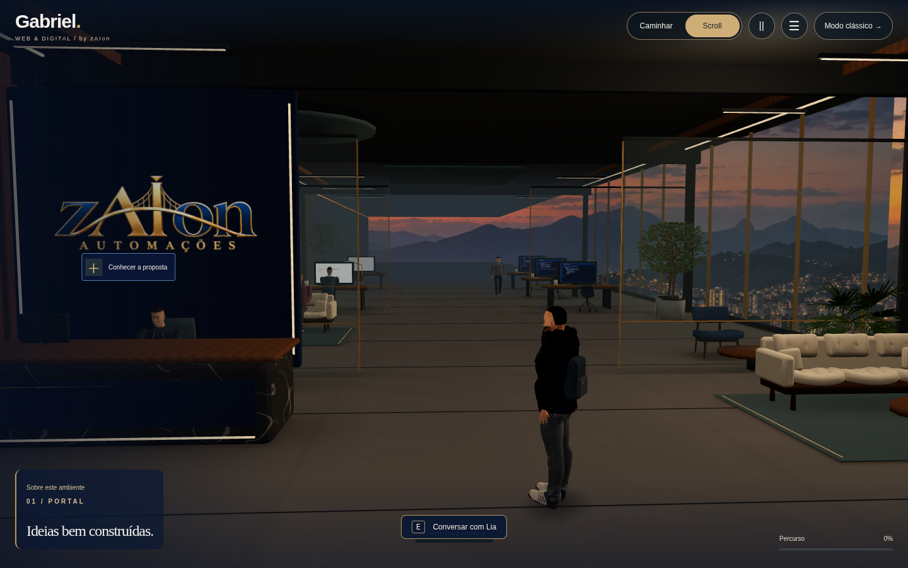
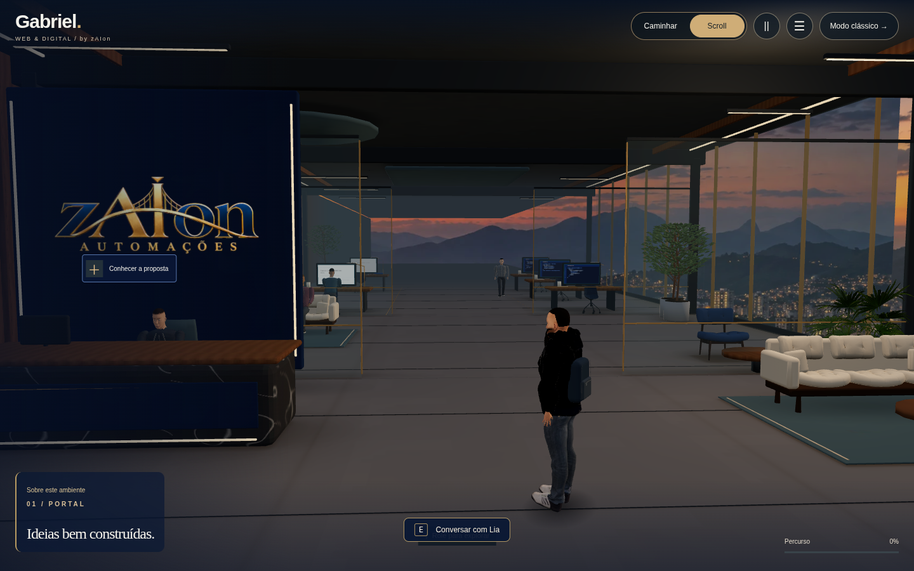

Luz ambiente mais neutra, melhor leitura de madeira e tecido e filtragem de texturas. Mesma geometria, câmera e personagem.
Esquerda: depois · Direita: antes. Arraste para comparar.


Capturas reais do Chromium/Three.js. NPCs podem variar de pose entre imagens. O perfil PBR foi renderizado sob SwiftShader; a emulação móvel não substitui um teste em aparelho físico.